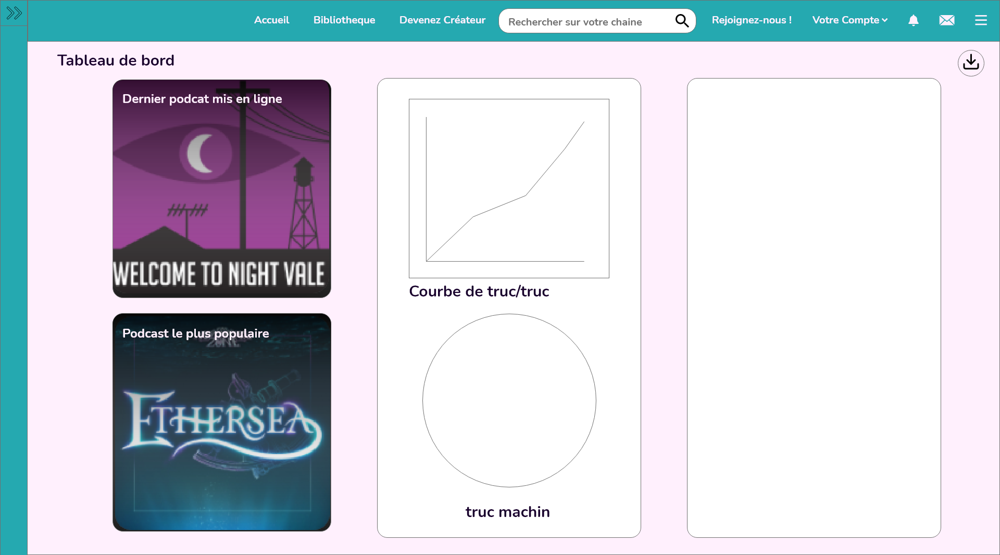
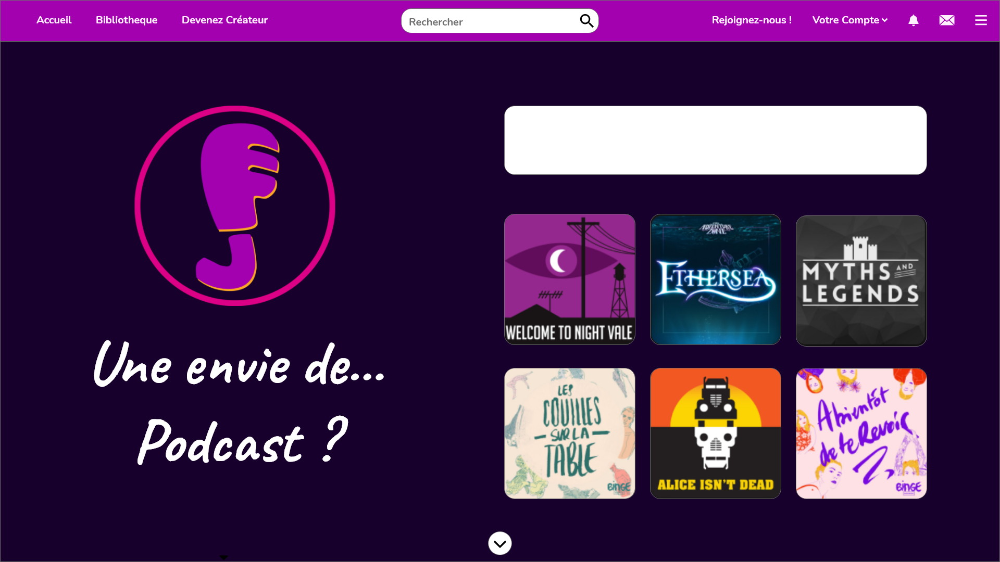
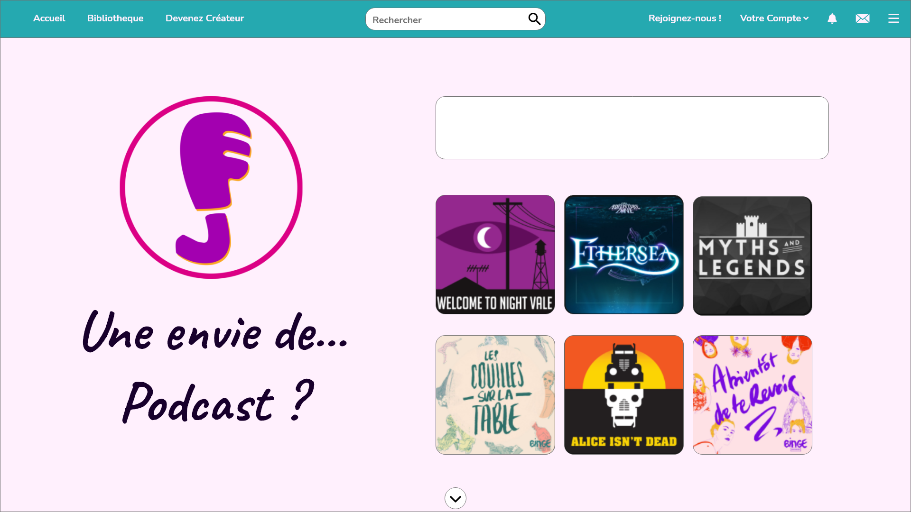
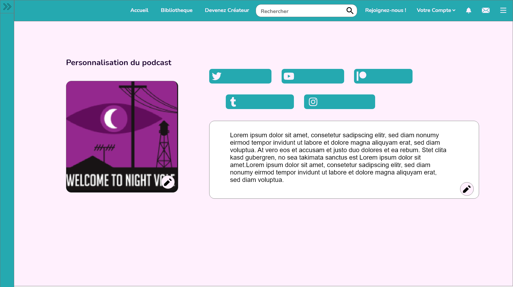
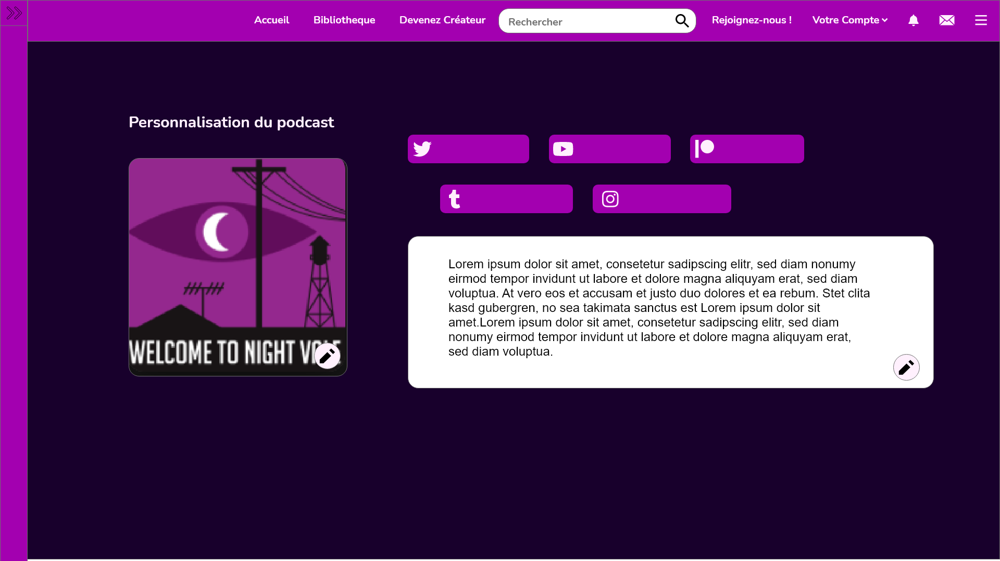
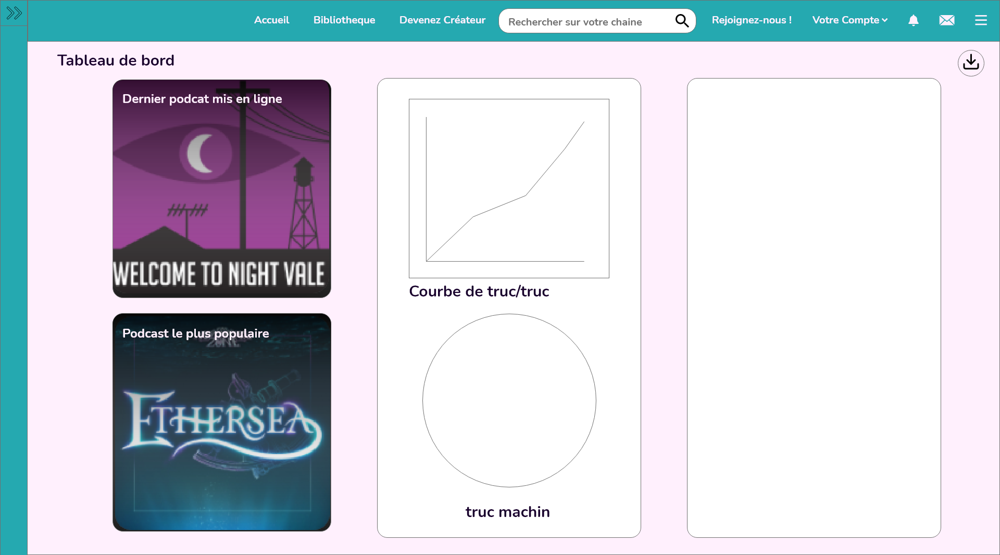
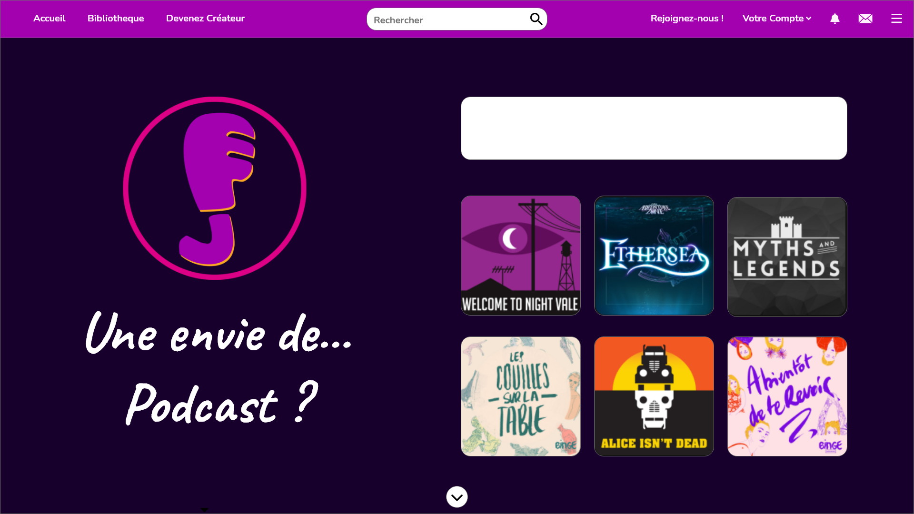
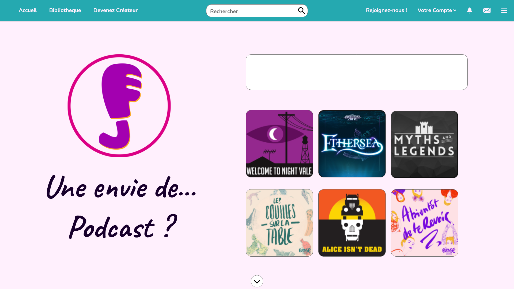
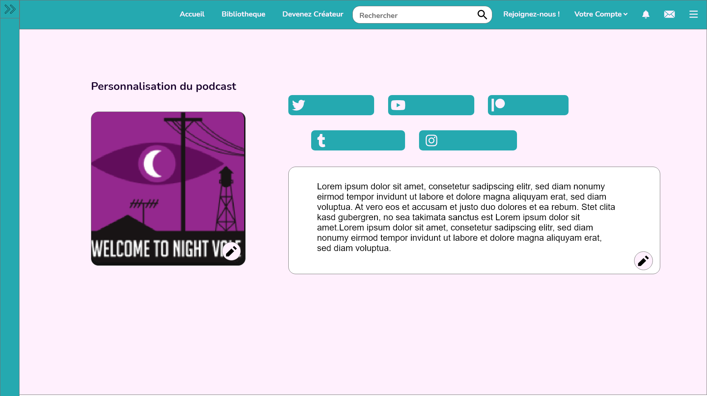
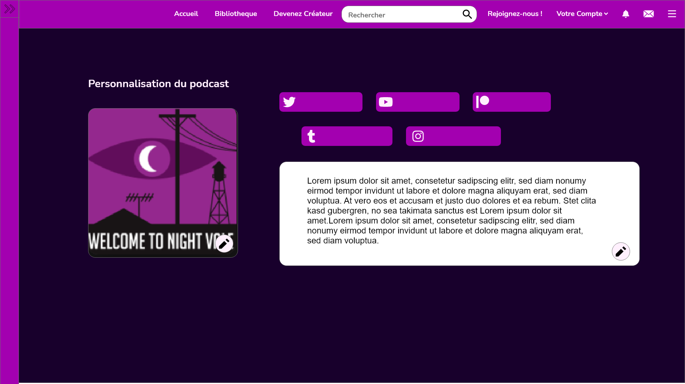

Voxam
 









Voxam, ce projet est né d'un intitulé de projet donné par notre professeur référent qui était de montré le son. Avec ma partenaire de projet Marine "Czeriah" Rossillon, nous avons pensé a une plateform de podcast accessible.